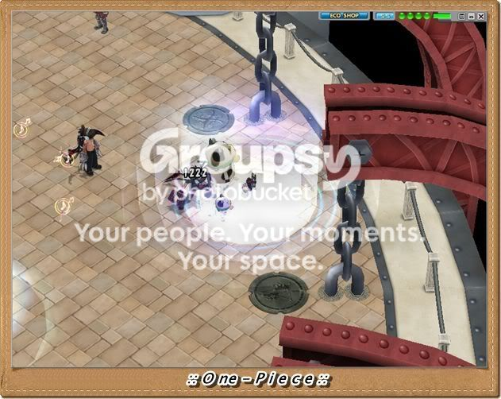

ถ้าจะใช้ loud song ฆ่ามอน กรุฟไปเลยยังจะดีซะกว่าT^T loud songทั้งเซน+แอสสิส ลองกับโจรขาวได้ปะมาน 3000-4000 ถ้าดิบๆก้อปะมาน1000+ได้มั้ง เปนการโจมตีทีเดียว ระยะการโจมตีจิงก้อไม่ได้กว้างเหมือนวงเพลงที่ออกนะ (รุ้สึกว่า) :cry:
รึมันอาจจะดีแต่เรายังใช้ไม่คล่องมั้ง :?:
http://eco.froztic.in.th/archive/ecofanclub/
[ :•: Bard :•: ] ไม่ได้ทำต่อแล้วนะ = w = ( นานแล้วแหละ )
http://eco.froztic.in.th/archive/ecofanclub/viewtopic.php?f=15&t=8088
หน้า 36 จากทั้งหมด 40
Loud Song เหมือนเอาไว้ใช้เวลาโดนรุมเยอะๆ มากกว่า
มอนมันกระเด็นนี๊สสส นึง
ด้านความแรงก็.... ถือว่าโอเคละกัน ( มั้ง = =" )
ส่วน Attract March
ร่ายช้า ติดยาก รีเฟล็คได้ หน่าย - -a
กรณีที่คนโดน จะนิ่งเอ๋อนานเลย
กรณีมอน มันจะวิ่งมาหยุดข้างหน้าประมาณ 1-2 วิ แล้วแต่ระยะทาง
เหลือ Dead March แล้วสินะ T^T
มอนมันกระเด็นนี๊สสส นึง
ด้านความแรงก็.... ถือว่าโอเคละกัน ( มั้ง = =" )
ส่วน Attract March
ร่ายช้า ติดยาก รีเฟล็คได้ หน่าย - -a
กรณีที่คนโดน จะนิ่งเอ๋อนานเลย
กรณีมอน มันจะวิ่งมาหยุดข้างหน้าประมาณ 1-2 วิ แล้วแต่ระยะทาง
เหลือ Dead March แล้วสินะ T^T
Long song กะดีอย่างนะ เเต่มีจะมีเทคนิกเยอะในการใช้บางครั้งอยุ่หน้ามอนกะจะไม่โดน เเล้ววิธีที่ดีๆกะคือ เอา attract march ร่ายนำไปก่อน ถ้าพวกพระที่อัพ int ติดมาด้วยกะจะร่ายไกลมานิดหน่อย เเล้วค่อยยิงท่า Long song วิธีนี้ลองใช้มาบ่อยมากเเละ :wink:
ดูในวิกิ ลาวด์ซอง โดน2ช่องด้านหน้าครับ - -*(กระจายเป็นรูปพัด)
ข้อดีอีกอย่างนึงของ ลาวซอง นะ
สามารถใช้ระหว่างสิงได้ + ไร้ดีเลย์
ท่านสามารถซอยนิ้วยิกๆ ช่วยประจัญบานได้
สรุปนะ เหมาะกับสาย DEX - MAG สายสิง ที่สุดงิ
อ้อ แล้วก็ตอนนี้ เว่ลขยับขึ้นมา ลองลง int ดูบ้าง
Attract March เริ่มติดพอควรเลยล่ะ
อาเรสแก้ไม่ได้ด้วย แต่รีเฟล็คได้ T^T
สามารถใช้ระหว่างสิงได้ + ไร้ดีเลย์
ท่านสามารถซอยนิ้วยิกๆ ช่วยประจัญบานได้
สรุปนะ เหมาะกับสาย DEX - MAG สายสิง ที่สุดงิ
อ้อ แล้วก็ตอนนี้ เว่ลขยับขึ้นมา ลองลง int ดูบ้าง
Attract March เริ่มติดพอควรเลยล่ะ
อาเรสแก้ไม่ได้ด้วย แต่รีเฟล็คได้ T^T
ท่าของbard มีท่าไหนที่สำคัญบ้างคะ
นี่สำหรับเราก็ประมาณนี้ค่ะ
- แซมบ้า
- มิวสิคเคิลมาเจสทรี่
- มิวสิคเคิลโบว (แต่สกิลนี้พอได้ลาวซองแล้วจะรีออกก็ได้ค่ะ พอมีลาวด์ซองไม่ยักกะกดสกิลนี้เลย เหอๆ มันแรงกว่า+หมู่ได้ เหอๆ-0-)
- แอทแทรคมาร์ช
- ลาวด์ซอง
- เดทมาร์ช
- แซมบ้า
- มิวสิคเคิลมาเจสทรี่
- มิวสิคเคิลโบว (แต่สกิลนี้พอได้ลาวซองแล้วจะรีออกก็ได้ค่ะ พอมีลาวด์ซองไม่ยักกะกดสกิลนี้เลย เหอๆ มันแรงกว่า+หมู่ได้ เหอๆ-0-)
- แอทแทรคมาร์ช
- ลาวด์ซอง
- เดทมาร์ช
อันนี้เป็นภาพการทดสอบสกิล Dead March โดยทดสอบกับแอสสาย vit อจิ โซลครบนะครับนะครับ แต่ตัวพระมีแค่โซลชาแมนสิงอกครับ magพระ65+32(Rouse Mental) (น้อยนิด =w=)
รูปแรก dmg ที่ได้รับโดยไม่กด zen นะครับ (กดสปีด+Rouse Mental) (รูปนี้ดูดีๆจะเห็นสถานะใบ้+หลับ)

รูปนี้ให้ชาแมนกดzen (กดสปีด+Rouse Mental)
รูปนี้ขอแรงคาบามากด Evil Soul ครับ แต่ว่าก้ไม่เป็นผลต่อสกิลครับ (ในไกด์ของกระทู้นี้หน้า22ได้บอกว่า สามารถใช้ร่วมกับ Evil Soulได้ จริงๆคือไม่ได้ครับ)(Zenอยู่คับ)

รูปนี้แสดงสถานะด้านลบโดยประมาณครับ รูปแรกๆลืมซูมภาพ =w=

เพิ่มรูปคับโดนโวยว่าลองให้ไม่ครบ - -* รูปนี้ทดลองเสก dark weapon ครับ ผลที่ได้ dmg เฉลี่ยเท่ากับปกติครับ ไม่มีผลต่อสกิล (จริงๆแล้ว ไอ้dark weapon+Evil Soul นี่ควรจะคิดได้นานแล้วแหละ มันสกิลคนละสายเลย มืดกับสว่าง แล้วก็คงไม่ค่อยมีคนอัพสกิล Dark Weapon มาเพื่อใช้กับสกิลนี้หรอกครับ คาบารุ่นใหญ่เค้าไม่อัพกันเปลืองสกิล)

จากการทดสอบแล้วพบว่าสถานะที่ติด ได้แก่ Sleep,Confuse,Stun,Silent,Slow ครับ ซึ่งโดยรวมแล้วจะออกทีละ2-3สกิล สกิลโล่แสงไม่สามารถลดทอนdmgได้ครับ ไร้ธาตุ
- สกิล Dead March นั้นถือว่าเป็นสกิลที่ใช้เวลาร่ายพอสมควรเลยครับ ขนาดผมdex60+ ยังถือว่าร่ายช้าเลย แต่สามารถร่นเวลาลงได้ด้วยสกิล Musical Mastery ครับ ใครที่คิดจะโอนสกิลนี้ไปเล่นในคลาสDruid ถือว่าต้องเอาmusical masteryไปด้วยเลยครับ ระยะเวลาการร่ายหลังมีสกิล musical mastery ก็พอๆกับท่า Attract March ครับ ใช้คู่กัน workคับ ไปจับพวกโหดมาให้วงเราถลุงได้ :wink:
*** สามารถใช้ร่วมกับสกิลดีดเช่น samba ได้ ***
รูปแรก dmg ที่ได้รับโดยไม่กด zen นะครับ (กดสปีด+Rouse Mental) (รูปนี้ดูดีๆจะเห็นสถานะใบ้+หลับ)
รูปนี้ให้ชาแมนกดzen (กดสปีด+Rouse Mental)


รูปนี้ขอแรงคาบามากด Evil Soul ครับ แต่ว่าก้ไม่เป็นผลต่อสกิลครับ (ในไกด์ของกระทู้นี้หน้า22ได้บอกว่า สามารถใช้ร่วมกับ Evil Soulได้ จริงๆคือไม่ได้ครับ)(Zenอยู่คับ)
รูปนี้แสดงสถานะด้านลบโดยประมาณครับ รูปแรกๆลืมซูมภาพ =w=
เพิ่มรูปคับโดนโวยว่าลองให้ไม่ครบ - -* รูปนี้ทดลองเสก dark weapon ครับ ผลที่ได้ dmg เฉลี่ยเท่ากับปกติครับ ไม่มีผลต่อสกิล (จริงๆแล้ว ไอ้dark weapon+Evil Soul นี่ควรจะคิดได้นานแล้วแหละ มันสกิลคนละสายเลย มืดกับสว่าง แล้วก็คงไม่ค่อยมีคนอัพสกิล Dark Weapon มาเพื่อใช้กับสกิลนี้หรอกครับ คาบารุ่นใหญ่เค้าไม่อัพกันเปลืองสกิล)
จากการทดสอบแล้วพบว่าสถานะที่ติด ได้แก่ Sleep,Confuse,Stun,Silent,Slow ครับ ซึ่งโดยรวมแล้วจะออกทีละ2-3สกิล สกิลโล่แสงไม่สามารถลดทอนdmgได้ครับ ไร้ธาตุ
- สกิล Dead March นั้นถือว่าเป็นสกิลที่ใช้เวลาร่ายพอสมควรเลยครับ ขนาดผมdex60+ ยังถือว่าร่ายช้าเลย แต่สามารถร่นเวลาลงได้ด้วยสกิล Musical Mastery ครับ ใครที่คิดจะโอนสกิลนี้ไปเล่นในคลาสDruid ถือว่าต้องเอาmusical masteryไปด้วยเลยครับ ระยะเวลาการร่ายหลังมีสกิล musical mastery ก็พอๆกับท่า Attract March ครับ ใช้คู่กัน workคับ ไปจับพวกโหดมาให้วงเราถลุงได้ :wink:
*** สามารถใช้ร่วมกับสกิลดีดเช่น samba ได้ ***
Dark Weaponหรือยัง...
จ็อบ50แน่ะ
เอ้า สู้ตายเฟร้ย~
เอ้า สู้ตายเฟร้ย~
ทำไม มันเบากว่า Long song เซนนิ
ชักท้อเเละ
ชักท้อเเละ
รูปสุดท้ายอ่า เห้นมีซอโดนที 3000 ด้วยนิ หรืออยุ่ที่บัฟ
ถ้าตั้งใจอ่านดีๆ ผมได้พิมพ์ระบุแล้วว่า "ตัวพระMag65ไม่รวมบัฟ(จริงๆ65+32) มีโซลชาแมนสิงอกตัวเดียว" แล้วก็ทดสอบกับตัวละครสาย "Vit AGi โซลครบเครื่องครับ" Dmg ที่ได้มันจึงเห็นเพียงเท่านั้นแหละ คราวหน้ากรุณาอ่านให้ถี่ถ้วนหน่อยนะครับ
ถ้าจำไม่ผิด EXorCiztนี่เค้าถึกโคตรอ่ะครับ = =
เลยอาจจะโดนเดดมาร์ชไม่แรงเท่าไหร่
ส่วนซอ ส่วนใหญ่ไม่อัพวิทกัน เลยโดนแบบเต็มเม็ดเต็มหน่วยน่ะครับ
/me ดูชื่อตัวละคร...........Extraz............
วันนี้Attrach Marchได้หยื่อกี่คนละครับ - -*(จำผิดคนก็ขออภัยครับ)
เลยอาจจะโดนเดดมาร์ชไม่แรงเท่าไหร่
ส่วนซอ ส่วนใหญ่ไม่อัพวิทกัน เลยโดนแบบเต็มเม็ดเต็มหน่วยน่ะครับ
/me ดูชื่อตัวละคร...........Extraz............
วันนี้Attrach Marchได้หยื่อกี่คนละครับ - -*(จำผิดคนก็ขออภัยครับ)